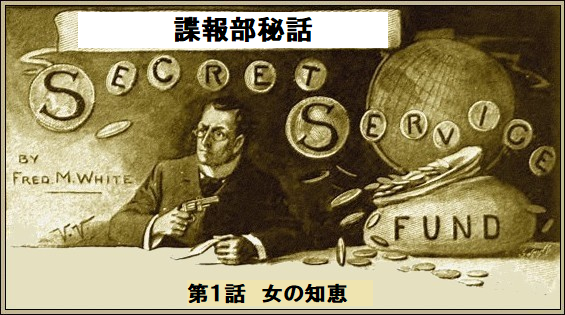
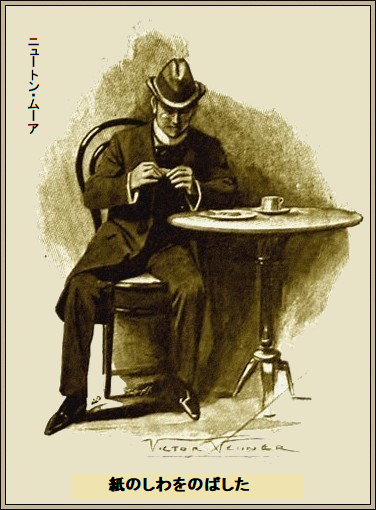
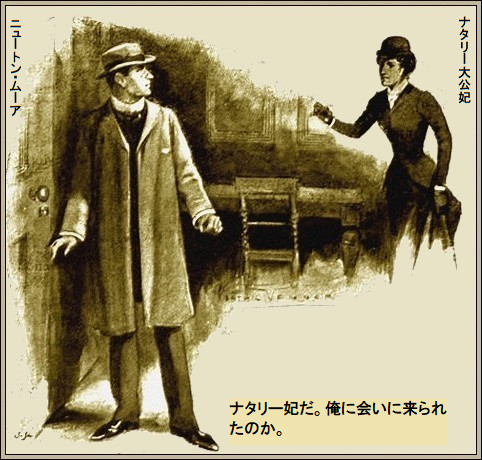
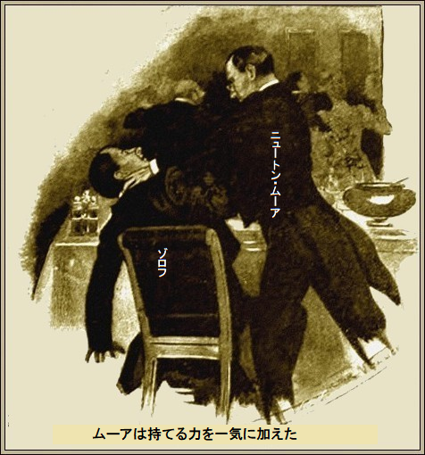
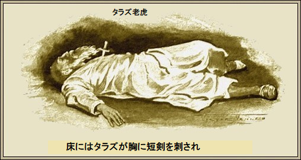

［＃改ページ］
「
こんな狂気の繰り言がニュートン・ムーアの脳にこびりついたのはガタゴト突っ走る長距離鉄道のせい。鮮やかな金色と
巨大な二連エンジンの音が、こうニュートン・ムーアにささやいた。実際、死に向かいつつあった。でも妻はもう新婦じゃないだろ？ 英国諜報部で一番有能で信頼される官吏、ニュートン・ムーアが妻の唇にキスをして、
部長のグレシャム・ウェルビー卿がムーアに告げた。
「過去最大の難事件だ。何があろうと本件の真相を知らなきゃいかん。さもないとリグビーやロングやマーサーら、三人と同じ運命だぞ。制約はつけない、君は諜報部の全資源が使える」
ムーアは身震いした。いつも強い妄想に取りつかれるたちで、見えぬ恐怖をこわがった。だがひとたび危険に直面すれば、決然と難事に立ち向かう。臆病者だと自称していたが、謙遜の割には
「任務に耐えられるか？」
と部長のグレシャム卿が不意に問うた。
ムーアがビビって青白く見えたからだ。ムーアの鼻
ムーアが答えた。
「本件をこなせる人材はいないでしょう。尋常じゃないですね。我が部局の最高諜報員が三人も変死しました。これまで解決の糸口すら
「同意見だよ、ムーア君。まあ保証できるのはコンティギュア国のボリス大公が誠実だってことかな。また分かってるのはロシア人が宮廷権力を使って、インド国境で反乱を扇動して、マンキュニスへ武器を運んでいることだ。これを止めないと、遠からずインドで深刻な事態に直面する。前兆ではコンティギュア人がボリス大公に反旗を
ムーアが答えて、
「ええ。あの国はよく知っています。
グレシャム卿が言われた。
「君は変な男だなあ。君の妄想に期待して、問題を解決してほしい。二度と悲劇はごめんだ。制約はない。誰が悪事を働いているか知らせてくれ。それ以上は求めない。当分、君が諜報部の事実上の親分だ」
＊
こうしてムーアは目的地に到着しつつあった。同僚の勇敢な男が同じ任務で三人も消え、変死して、英国政府は無力にも誰も非難できない。
次々に襲われるのが、コンティギュア国の首都テネドスに到着する直前だ。それどころか、三十キロ先で同じ運命が待ち伏せている。
今はとても怖い。危険にさらされると、いつも気が滅入る。妄想で震えあがる。食事がのどを通らず、わずかに手持ちの煙草を吸うのみだ。
やがて赤と金に塗られた長い列車がブルブルッと止まった。国境に到着し、税関の面倒な手続きが行われる。ムーアには関係なかった。というのも手荷物は二日前に送ったからだ。客車から急いで降りて、
「何か食わねば。三十時間何も食べてない。ビスケットが喉を通るかなあ」
と独り言。
給仕係りが一人。ツンとするコーヒーを一杯、それに大きな平たいビスケットを二枚、大皿で運んできた。薄い小麦ビスケットをつまんだものの、何となくもう一枚が気になった。それを無造作にボロボロ砕いた。何か異物――紙――が大皿に落ちた。
ムーアはわけが分からずハッと身構えた。

『首都のテネドスまで行くな。うまくやり過ごせ。この村で早馬を仕立てて目的地まで行け。夜の六時以降に出発せよ。そうすれば夜中に首都のテネドスへ着く。バーナ通りの大きな宿屋へ行くように』
決断時間はない。この紙は味方から来たのかもしれないし、敵から来たのかもしれない。ムーアの決断は直感、めったに間違わない。ここで下車した。
ムーアは多国語が話せる。一時間でバーナ通りの大きな
ムーアはやや疑心暗鬼だったが、銀の耳輪をつけた太っちょ亭主は訪問者の到着に少しも驚いてないようだ。でぶ亭主の態度がそわそわ、細い眼でムーアを絶えず追った。
「お客様は個室をお望みで？」
と押し売りだ。
ムーアは無造作にうなずいた。指示通り、駆け引きをやるつもりだ。天井の低い大部屋、くすんだ外壁、照明は暗く、
ムーアがつぶやいた。
「ナタリー妃だ。俺に会いに来られたのか」

大公妃が眼前に立っておられる。褐色の美形、感激でドキドキだ。愛らしく、由緒正しく、大胆で、ロシアを激しく憎み、貧しい自国をこよなく愛しておられる。
「よろしくて。あなたの入国は知っておりましたが、更に重要なことは他人も知っていることです。日程通り首都のテネドスへ行ったら、朝には死体になったでしょう。私の警告を聞いてくださり、大層うれしゅうございます」
「妃殿下、雲をつかむようでございました」
「断定できかねましたのよ。諜報の実態をご存知でしょう。私は妨害されています。仲間に裏切り者がいて、宮廷を支配してます。大公を完全に丸めこんで、立場を利用して破廉恥なことを行っています。最悪なことにロシア諜報員なのです」
ムーアは洗いざらい聞くつもりだ。諜報部員としてこの国へ来たのだし、ロシアのスパイをあぶり出すのが仕事だ。奴らが悪事を仕切っている。突きとめれば任務完了だ。だが同時に、眼前に横たわる危険は充分承知。
「妃殿下はここへ来られて危険でございます」
「多少はね。でもあなたが英国諜報員に選ばれたと偶然知り、今こそ好機と判断しました。今日この近くで
薄暗い中ですらナタリー妃の両眼は光っていた。愛国心というより、激しい嫉妬に突き動かされている。その望みは自分を中傷する女に復讐することだ。
ムーアが応えて、
「ゾロフは
大公妃が認めて、
「たしかに驚くほど美しい。その美貌で私の夫を
「大公の弱みを握っているのではございませんか」
「そうです。全て打ち明けたほうがよさそうね。覚えているでしょう、十年前この半島を一つの王国に統合しようとして失敗したのを。武力で大公を三人も退位させました。ゾロフがロシアの為に行ったものです。ゾロフが掴んだのはボリス大公の離反証拠書類です。私達の立場が弱い理由がおわかりでしょう。日ごとにボリス大公の力は衰え、ゾロフは革命分子を扇動しています。明晩クーデターが画策されています。もし敵をねじ伏せ、宮殿窓の正面から大衆に引きずり出せば、コンティギュア国は救われ、あなたの任務も完了します。その為に私はここへ来たのです。あなたは信用できるし、我が国民の習性をご存知だからです。国民はまだ私を愛しています。私の命令なら何でも聞きます。同時に牧羊犬のいない羊みたいにバラバラです。手をお貸しくださる？」
大公妃が震える両手をムーアに差し出された。ムーアは両手で押し頂き、自分の唇に持ち上げた。
「それが私の義務と決意でございます。妃殿下の胸には計画がおありとお見受けしました。私を信用してくださる栄誉を賜り、望外の喜びでございます」
大公妃は明瞭に早口で話された。ムーアは興味深く感心して聞いた。ムーアの妄想に火がついた。むらむらと血湧き肉躍る。両眼がメラメラ輝き、青白いほほが、いつになく紅潮した。
＊
暗闇の中、大小二頭の頑丈な馬が、首都テネドスの
「お客様、夕食とお飲み物はいかがでしょうか」
と係りが
「寝室にビールを一本たのむ。居間は暗いままでよい。夕食は要らない。一人にしてくれ。用事があればベルを鳴らす」
遅いにもかかわらず、大勢まだ活動していた。落ち着きのない風情だ。下の薄暗い小道から騒動はなく、不平やつぶやきに過ぎないが、ひとかたならぬ不服のうっぷんが暗闇に隠れている。
民衆は今にも騒ぎそうだ。誰か導いてくれさえすれば、平和でも戦いでも構わない。ムーアの経験では、前兆を見逃すほどに過ちを犯す。
もっとよく知りたい衝動に駆られ、重い外套をひっかけ、帽子を深めにかぶり、そろり、生温かい暗闇の通りへ出かけた。舗道で立ち話をしている男どもがいる。議論に熱中していた。
尖塔の濃影に隠れ、ムーアはじっと耳を澄ました。
一人目が、
「ボリス大公は昔の大公と違うぞ。ゾロフがいる限り、コンティギュア人は喜べない」
二人目が鼻白んで、
「まてよ、ゾロフ夫人の方だぞ。すべての争いの原因だ。大公はぞっこんだと言うじゃないか。
「山岳の
と最初の男が知恵をつけた。
三人目が、
「だめだ、だめだ、タラズ老虎なら上等だが、密輸銃でロシア側に立って行動している。知らないのか、ゾロフがタラズ老虎のおぜん立てをしているぜ」
全てがムーアにとって興味津津だ。コンティギュア国は陰謀、策略、熱情で騒然となってることがよくわかった。ゾロフがタラズ老虎を
一方のタラズ老虎もゾロフと共謀して、玉座に就こうとしている。しかし、ずる賢い山岳の老虎タラズは反乱が成功したら、平気でゾロフを殺す魂胆だろう。
すべてはムーアの推定、しかも大いにだ。よくわかった事実は、コンティギュア人の大部分がタラズ老虎のほうが好きってこと、その簡単な理由はロシア人より山岳民が多いからだ。
宮廷や国がとても小さいので、漏れた噂や醜聞はどれも首都テネドスの人々が食い入るように聞いた。
最初の男が知ったかぶりで、
「あしたよくわかるだろうよ。皆の話じゃ、明日の晩、宮殿門で合図をして、タラズ老虎がボリス大公にとって代わるそうだ。暴動も流血もないよ」
厚ぼったい外套を着た大男が吠えて、
「両方あるぜ、タラズ老虎が権力を強奪する前には。俺ならゾロフは一時間と生かしちゃいない。噂じゃ、やつは裏切りの証拠を握ってるとか。もしボリス大公がひと言おっしゃればテネドス人の全てが駆けつけて、ロシア人をずたずたに引き裂くぜ。支配者がどうなろうと知らん。いつもの大公はどうしたんだ」
最初の男が深いため息をついて、
「昔のことだよ。いつも事件の裏には女ありだ。バカな間抜けがゾロフ夫人に魂を抜かれおって」
「ブカレスト劇場の合唱団にいた女だ。ペテン師め。仲間が避けて、あえて無視した女だぜ。なのにみんな女の操り人形だ、糸を引かれりゃ踊ると来た。なんで大公妃は我々に訴えない？ 俺たちゃ妃の為なら何でもすると分かってるくせに。誰か俺に加勢するやつはいないか」
誰も答えない。潜り込んでいるスパイや影に皆おびえているからだ。
全てが聞き手のムーアを酔わせた。忠誠心を無くすほどの不平・不満に、ムーアは奮い立った。妄想が燃えた。民衆を解放する自画像が脳裏に浮かんだ。おかしみがどっとあふれ、にやり。青白い顔の鼻
＊
翌朝ムーアが宮殿に行くと、不満の感情や気配が雲のように首都を覆っていた。
ボリス大公が満面の笑みを浮かべ、この英国人を心から歓迎した。浅黒い感性的な顔には
そばにやせた長身の男がいる。そり上げた顔、両眼に悪魔の黒い炎がメラメラ燃えている。冷笑が顔に浮かんだのは異邦人ムーアにお辞儀したときだ。誰だか言う必要はない。
ゾロフがよく通る声で満足げに言った。
「無駄足だったようですな。でもあらゆる援助はご用意しております。首都テネドスの気候は英国人には悪いようですが、あなたはとても勇敢ですな」
最後の言葉は紛れもない脅しだ。話し手ゾロフの首を絞めたい衝動に駆られた。ゾロフのフロックコートの下には、誰も知らないことだが、多くの秘密、つまりムーアが何年も追求した証拠書類がある。
ゾロフが陰謀の主導者であり、余りにも狡猾な為、暴くことも証明することもできない、それこそ脅威だ。又しても女神のいたずらか、ムーアはためらった。スキがあったら飛びかかっていたかもしれない。そんなことで、ムーアは秘密をぐっと胸にしまった。
ムーアが応じた。
「特徴をよく見ておられますね、今言われた性質こそが英国を偉大にしました。事に当たるときはどんな犠牲を払ってもなし遂げます」
ゾロフが挑戦を軽くいなした。
「見ものですな。申し上げた通り、ここの気候は体によくありません。対処方法がお分かりなら……」
「伝染病の予防方法はあります」
ゾロフはもう笑ってない。逆に困惑したようだ。ここにゾロフの冷酷さに匹敵する敵が出現したと分かり始めた。
ボリス大公はきまり悪そうだった。もしゾロフに礼儀を尽くすのであれば、助け船を出して、筆頭顧問のゾロフを救ったかもしれない。この顧問こそが大公を操り人形にし、眼前で武力をちらつかせる男だ。
ポリス大公が口をはさまれ、
「友人のゾロフの言うことはいちいち気にしないでよろしい。冗談は
ムーアが答えて、
「お言葉ですが、殿下、賢人ならゾロフ顧問の発言は真剣に受け止めなければなりません」
大公がだしぬけに、
「今晩七時に夕食はいかがですか」
ムーアが待っていた招待、くだんの招待が遂に来た。ちょっと気負ったのは、大陰謀家ゾロフの鼻先で攻撃が行われることを知っているからだ。
「とても嬉しく光栄でございます」
とムーアは返事した。
そのとき、別な男が部屋に入って来た。
ボリス大公が簡潔に、
「こちらは山岳人のタラズです。今晩また会います」
タラズ老虎はムーアに目もくれない。
ムーアはロシア人の顔を真正面から見すえて、
「忠告を受け入れて、明日テネドスを去りますよ」
＊
ムーアは場所をわきまえてきちんと正装した。表向きは物静かな紳士として夜会服に身を包み、夕食に出席する。
実際は、戦略上重要な役を演じようとしていた。つまり暗殺を企て、欧州を大火から救う役だ。原因はあの淫乱女――唯一の観客だ。
ムーアは、諜報部の信頼できるしもべであり、その任務に関して、詮索好きな下院議員にすら質問権がなく、以前も危険に遭遇したけど、こんな危機に出くわしたことはない。
ゾロフが殺すと脅した。ムーアの目的を知っていた。このロシア人を追い詰め、銃の流入を止め、ボリス大公を
ムーアがつぶやいて、
「神に感謝だ。俺の方には勇敢な女性がついている。二時間でいずれにしろ片がつく。かわいそうなナタリー妃はここでは俺以外誰も信用できない。だが成功すれば、コンティギュア国民はあした服従する」
ムーアは衣服を最終チェックして、馬車のベルを鳴らした。
「私が命じた夜食は用意しておいてくれ。夜中までに戻らなかったら、要らない」
＊
現実にムーアは二十四時間何も食べていなかった。食い物のことを考えるだけで吐き気がした。通常の環境であれば食欲は正常だ。宮殿の晩餐がどんなに美味だろうと、何も食べられそうにない。
ムーアの妄想が鮮明で強烈だろうが、走行中、通りの混乱状態は見逃さなかった。大勢の男どもが集まって熱心に事態を議論している。当分、女たちは屋敷の中に隠れている。宮殿広場では何百人もがうろつき、何かを待っているかのよう。
大っぴらな反乱というより不機嫌、不満と言ったところ。一人の指導者を待っている雰囲気だ、たとえ好きな人物でなくてもだ。
ムーアが独り言で、
「一触触発だなあ。大公妃が成功すればコンティギュア国と地位も救われる」
一方、宮殿の中は喜劇の様相を呈した。
やがてムーアのことは皆に何となく知れ渡った。だがムーアがひたすら関心を向けたのは大公、大公妃、タラズ老虎、ゾロフ顧問、そして最後に、並々ならぬ関心だが、派手なペテン師、つまりゾロフの妻だ。
細身で色白の女が、眼もくらむような笑顔と歯を見せている。赤い唇、深い
魔力で男どもを惑わし、狂わせる。そんな美しさには何かむごたらしさすらあった。客間が寒い為に、ゾロフ夫人の乳白色の肩はまだ薄いショールで覆われている。
時々、大公妃の方に視線を向けている。輝かんばかりの笑顔にムーアは裏切りをしっかり見た。何ものも見逃さぬこの男は小説家であり、行動派でもあった。
会話はとぎれとぎれだった。大公に落ち着きがなく、上の空だったからだ。大公妃は完黙を貫いた。顔面は胸に付けた
ゾロフ夫人が夫のゾロフにささやいて、
「まるで
ロシア人のゾロフが無造作に返事して、
「まさしくそうだな。ナタリーは賢い女だから、負け時を知っている。夜明けまでに服従させる方法を見つけるよ」
「民衆が収まらないんじゃないの」
「抜かりはない。民衆は大公からうまく離反させたよ。どんな指導者でもいないよりましだ。ロシアにはタラズがいい。同類だと知ったらどうなるやら。だが奴ら知らない。耳をそばだててみろ、広場の群衆がつぶやいているのがわかる」
ゾロフ夫人がピンク色の小耳で遠くのつぶやきを聞いて、ほほ笑んだ。怒りが渦巻いているようだ。
制服姿の召使いが折戸を開け、晩餐の用意を告げた。ナタリー妃がそばを通った時、ムーアは妃の視線を受け、大きな勇気をもらった。
さあ、行動派の出番だ。戦いを前に、言い知れぬ見えぬ不安がふつふつ。勝利の高まりを感じ、輝かしい成功が見えてきた。
＊
しばらく晩餐会は静かに進行した。
そのときが近づいていた。外の声がだんだん大きくなり、晩餐会場までも聞こえるようになった。礼儀知らずの弁士が群衆に声高に演説している。ナタリー妃の顔に、冷めた笑みがちらり。
ナタリー妃が、
「人民の自由という西欧の考えは伝染しやすいですね」
テーブルの明かりにポツンと照らされ、話者ナタリー妃の顔は以前にもまして
ゾロフが笑って、
「ボリス大公ならお答えがございましょう」
ナタリー妃が問われた。
「あなたは清廉潔白なの？」
この問いは挑戦だ。おしゃべりが流星のようにパッと途切れた。ナタリー妃が立ち上がり、召使いを部屋から追い出した。がちゃんと大きな音をたてて鍵をかけた。
部屋中に戦慄の驚きがあがった。ゾロフ夫人が薄笑いしてショールを後ろへおろし、椅子にふんぞり返った。
「お
とゾロフがかすれ声で言った。
ムーアは話者ゾロフをじっと観察。英国人ムーアは椅子を一脚あけて座り、目視で敵の位置を測っていた。ナタリー妃の右側にタラズ老虎が座っている。まるで聖書台の
「思ったより強いわよ」
とナタリー妃。
ゾロフ夫人がカラカラ笑った。ナタリー妃が猛然と食ってかかった。
「この恥知らずめ。お前は私の夫を盗み、街で自慢している。お前の髪や胸の宝石は私のものだ。大公が与えたものだ。それを私に見せつけている」
「おや、私の妻をそしるのか」
とゾロフが大声。
ナタリー妃が反撃して、
「お前の妻は堕落しすぎて貞操が全くない。大公は非難しない。眼がさめればまた正常に戻る。今晩眼を覚ます。さあ、宝石をよこしなさい」
一瞬、高貴なお方の命令でゾロフ夫人がすんなり納得した。本能的に胸の宝石に手をかけた。
ゾロフが叫んで、
「ダメダメ、やっちゃダメ」
「よこしなさい、よこしなさい、すぐによこしなさい」
ナタリー妃がなじって立ち上がり、テーブルを横切った。そのときムーアは短剣の
次の瞬間、テーブルのランプが引っくり返り、明かりが消え、部屋全体が真っ暗になった。ただ、小さなこぼれ火が青い炎を出し、真っ白な食卓布で燃えている。
招待客のほとんどがキャーと大声をあげ、扉に殺到したが、鍵がかかって出られない。
ちょっと興奮してムーアの口から笑いがクックッ。動きたくて脳がグラグラ、指がウズウズ。遂にそのときが来た。
ランプが消えるが早いか、文字通りゾロフに飛びかかった。今まですべてムーアとナタリー妃のまさに計画通り運んでいる。部屋は真っ暗、招待客は恐れて扉の所にかたまっている。邪魔されることはない。ゾロフは王権に匹敵する書類を持っている。
ムーアは敵の首根っこにがっちり取りついた。狂喜してロシア人の首をつかみ、床に押し倒した。ムーアは持てる力を一気に加えた。任務成功の為に、そして己の命の為に戦い、

ゾロフは青二才でもなく、反抗できない腰ぬけでもないが、不意打ちを食らった。遂に捕まってしまい、今にも
でも腕を振り切れない。やがてロシア人の目に赤い光が満ち、耳に海鳴りが響き、忘却のぬるま湯に落ちて行った。夢うつつの中で、誰かポケットを探っている、なま暖かい赤い血がどっと流れる感じがして、気を失った。
ムーアは遂に書類を取り返した。尻ポケットから細長い手錠を取り出し、ロシア人の両手にガチャンとはめた。同時に、
いまや、充分な明かりがある。わずかに五人だけが居残った。床にはタラズ老虎が胸に短剣を刺され、石のように死んでいる。顔は穏やかで安らかだ。すみやかに死が訪れたためだ。

炎がますます高く上がった。下の広場に人々が何百人も押し寄せ、熱くなって、うずうずしている。たちまち黒だかりの人々の中を野火のように事実が走った。
ゾロフがよろよろ足をひきずるそばで、大公妃が片腕をひっつかみ、バルコニーに引っぱり出し、ぼうっとなり目隠しされた惨めな姿を立たせた。
赤い光が二人を背後から照らした。下の人間オオカミどもが吠えるような長い歓声を上げ、次にピタリ静まり、痛ましいほどだ。そこにいる人々は事態を知った。あたかも暗闇の悲劇を目撃したかのようだ。
＊
一時間後、テネドス中に
歓喜する群衆の誰もが愛国心に燃え、狂気に乱舞したのは、ナタリー妃が燃え盛る炎を背に、バルコニーから演説されたからである。
ナタリー妃がニュートン・ムーアに尋ねられた。
「満足ですか。成功しましたか」
「これ以上の望みはございませんし、野暮なことをお尋ねする気もございません。妃殿下なしでは失敗したでしょう。まさに絶好の機会をご存知でした。ただ欧州新聞にすっぱ抜かれなければよろしいですが……」
ナタリー妃が意味ありげに、にっこり。
了